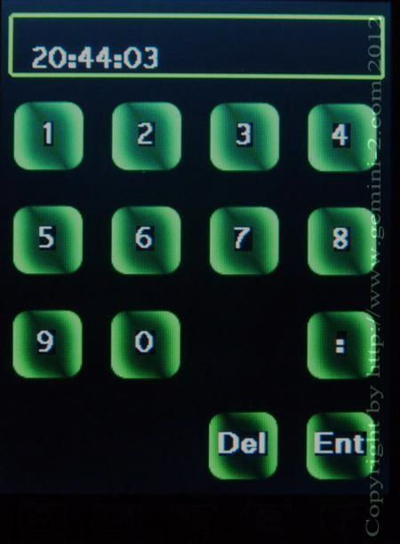

| Quick Start Tutorial - click on green button to Navigate |
|
 |
This is the screen where you enter your local time.
Enter your time in 24 hour format. Put one: between Hours: Minutes:
Seconds Normally, I enter the time at least 30 seconds in the future. This gives me time to get back on time / date screen (click "ENT" to go back) then click the "Set" button on this screen to set the correct time. NOTE: If you would like to avoid the hassle of daylight saving time, or Half or Quarter time zones if you live in one of them, then enter the offset as 0 and the time and date as UTC time and Date. The Gemini-2 will work great with these setting anywhere in the world. Get UTC from World Time server. |